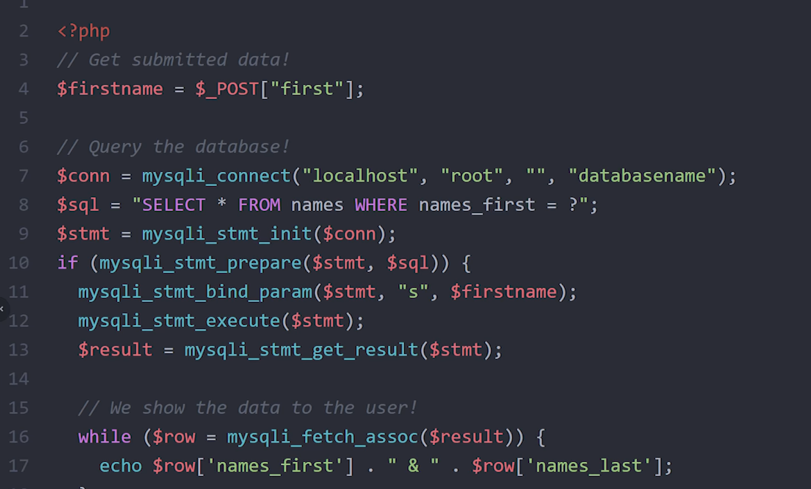
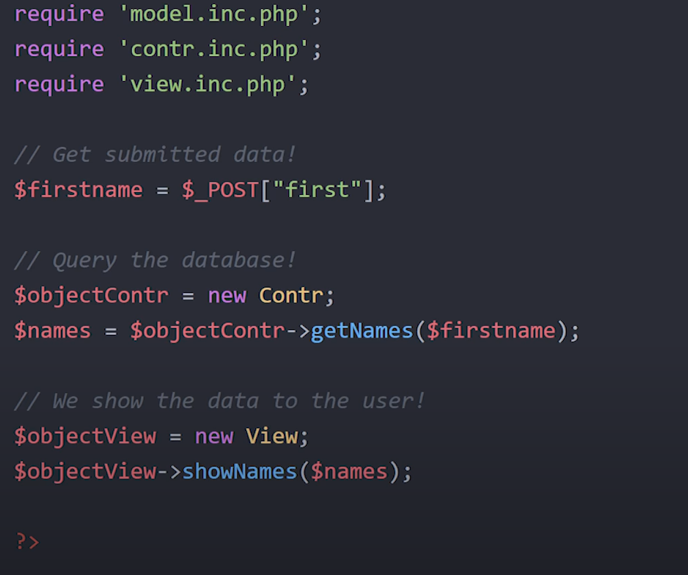

Procedural is okay for small projects. If you have a login system, a OOP mvc model is a huge UPGRADE because the code isnt as messy.

observe some OOP code snippet
THE MVC MODEL
Imagine a brown haired boy, slouching on a chair, with horrible posture, clutching at his xbox-360 CONTROLLER. The controller is connected to the xbox 360 MODEL. The console displays the video game, minecraft on his huge flatscreen. What a VIEW!
If you guessed by now, the controller will manage user input, such as queries to the database.
The Model will connect to the database, query it and then finally, the view will display everything to a page.